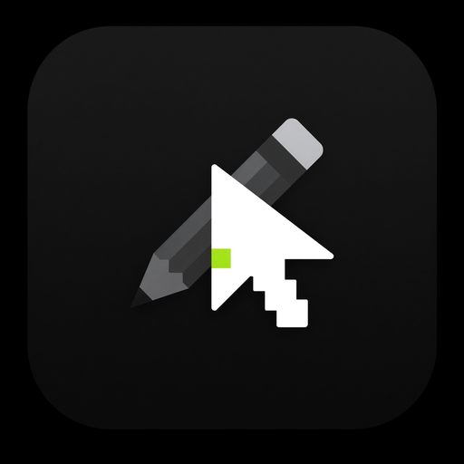

Hoş geldin, Demhat
İmleçlerini kişiselleştirmeye devam et

İmleçlerini kişiselleştirmeye devam et
Bir veya birden fazla .rbxcursor / .zip dosyasını buraya sürükleyip bırakabilirsin.
Dışa aktarmak istediğin paketleri seç. Her biri ayrı .rbxcursor dosyası olarak bir klasöre kaydedilir.
Bu dosyayı ne yapmak istersin?
Bu dosyayı tanımadığın biri gönderdiyse açma. Sadece Discord sunucumuzdaki onaylı paketleri kullan.
Sadece güvendiğin kaynaklardan paket indir. En güvenlisi, Discord sunucumuzda yetkililer tarafından onaylanan paketlerdir. Tanımadığın kişilerden veya DM ile gelen dosyaları açma.
Otomatik durum tespiti bazı oyunlarda ara sıra yanılabilir. Her durum için bir .ANI dosyası seç. Animasyon atanan durumda Roblox’un sabit imleci gizlenir, yerine native animasyonlu imleç gösterilir. Kaldırılırsa statik imleç geri döner.
Türkçe / English
Arayüz rengi — mavi, mor, kırmızı, pembe veya sarı
Kontrol ediliyor…
Roblox güncellendiğinde kayıtlı imleçlerini yeni sürüme otomatik olarak yeniden kurar.
Bilgisayar açıldığında uygulama otomatik olarak başlasın.
✕ düğmesi uygulamayı kapatmaz, sistem tepsisine küçültür; kısayollar ve otomasyon çalışmaya devam eder.
Her paket için kendi klavye kısayolunu belirle. Roblox içindeyken de çalışır.
Yeni bir sürüm çıktıysa burada görürsün.
Düzenleyicide kaydettiğin imleçler Geçmiş listesine eklenir. Kapatırsan yeni kayıt eklenmez; mevcut geçmiş silinmez.
RBX Cursor Studio — Yapımcı: Demhat Dayan
© 2026 Demhat Dayan. PolyForm Noncommercial License 1.0.0
ile lisanslanmıştır: kişisel, eğitim ve ticari olmayan
kullanım serbesttir; ticari kullanım için yazılı izin gerekir.
Roblox başladığında en son kullandığın paket otomatik uygulanır.
Belirlediğin aralıkta paketler otomatik değişir. Roblox kapalıysa o tur atlanır.
İmlecinin arkasında solan yumuşak bir iz çizer (tüm ekranda).
Roblox ön plandayken her sol tıkta kısa bir ses çalar. Native yardımcının (cursor_helper.exe) bu sürümle yeniden derlenmiş olması gerekir.
Discord açıksa otomatik algılanır ve profilinde hangi paketi kullandığını gösterir. Ayar yapman gerekmez.
discord-rpc paketi kurulu değil (npm install çalıştır).
GitHub'daki en son sürümün değişiklik notlarını göster.
Tüm uygulama ayarlarını tek bir JSON dosyasına kaydet ya da başka bir yedekten yükle (paketler dahil değildir).
Görseli sürükleyerek konumlandır
Renklendir (siyah-beyazdan renk üret)
Yeni görseller açıldığında otomatik olarak 64×64 alana dengeli biçimde sığdırılır ve ortalanır.
Manuel ortala.
Cursoru gerçek piksel boyutunda, oyun içi bir sahne üzerinde test et.
Şu an kullanılan tüm imleçleri, boyut ve konumlarına dokunmadan seçtiğin renk tonuna boyar.